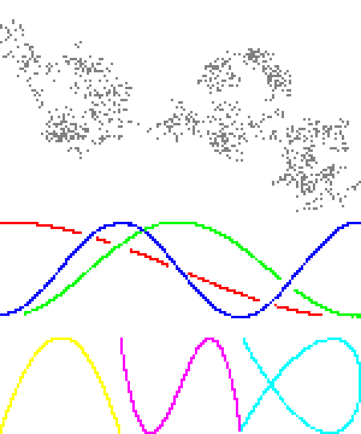
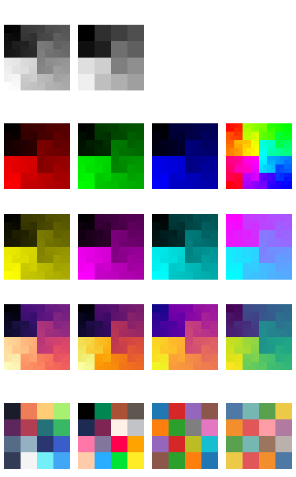
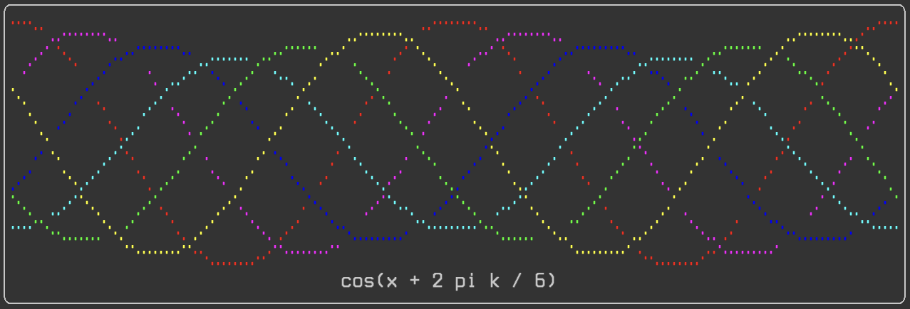
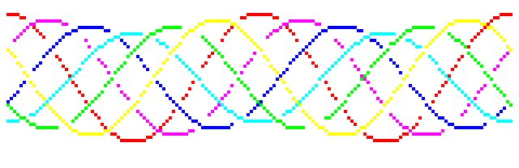

Matthew's plotting library (matthewplotlib)docs
A Python plotting library that aspires to not be painful.
Status: Work in progress. See roadmap. Currently, still generally painful, due to lack of generated documentation and lack of common plot types. However, for personal use, I'm already finding what limited functionality it does have delightful.
Key features:
-
Colourful unicode-based rendering of scatter plots, small images, heatmaps, bar charts, histograms, 3d plots, and more.
-
Rendering plots to the terminal with
print(plot). No GUI windows to manage! -
Plots are just expressions. Compose complex plots with horizontal (
+) and vertical (/) stacking operations, as insubplots = (plotA + plotB) / (plotC + plotD). -
If you absolutely need plots outside the terminal, you can render them to PNG using a pixel font.
Key missing features (so far, see roadmap):
-
Line plots still to be implemented.
-
Plots don't have visible axes, ticks, ticklabels, or axis labels yet.
-
No HTML documentation (but see WIP markdown DOCS.md).
-
Not a lot of input validation, error handling, or testing.
Some eye-candy:
 |
 |
 |
Quickstartdocs
Install:
pip install git+https://github.com/matomatical/matthewplotlib.git
Import the library:
import matthewplotlib as mp
Construct a plot:
import numpy as np
xs = np.linspace(-2*np.pi, +2*np.pi, 156)
ys1 = 1.0 * np.cos(xs)
ys2 = 0.9 * np.cos(xs - 0.33 * np.pi)
ys3 = 0.8 * np.cos(xs - 0.66 * np.pi)
ys4 = 0.7 * np.cos(xs - 1.00 * np.pi)
ys5 = 0.8 * np.cos(xs - 1.33 * np.pi)
ys6 = 0.9 * np.cos(xs - 1.66 * np.pi)
plot = mp.border(
mp.scatter(np.c_[xs, ys1], width=78, yrange=(-1,1), color=(1.,0.,0.))
@ mp.scatter(np.c_[xs, ys2], width=78, yrange=(-1,1), color=(1.,0.,1.))
@ mp.scatter(np.c_[xs, ys3], width=78, yrange=(-1,1), color=(0.,0.,1.))
@ mp.scatter(np.c_[xs, ys4], width=78, yrange=(-1,1), color=(0.,1.,1.))
@ mp.scatter(np.c_[xs, ys5], width=78, yrange=(-1,1), color=(0.,1.,0.))
@ mp.scatter(np.c_[xs, ys6], width=78, yrange=(-1,1), color=(1.,1.,0.))
| mp.center(mp.text(f"cos(x + 2 pi k / 6)"), width=78)
)
Print to terminal:
print(plot)

Export to PNG image:
plot.saveimg("images/quickstart.png")

Other examplesdocs
See examples/ folder. Highlights:
-
lissajous.py showing scatterplots and basic plot arrangement.
-
colormaps.py showing off the different available colormaps more advanced plot arrangement.
-
calendar_heatmap.py showing how to construct a custom plot, in this case colouring the cells of a calendar (inspired by GitHub issues tracker).
-
teapot.py showing a 3d scatter plot and animation.
Ideas for future examples:
-
Simple machine learning experiment, loss curves and progress bars.
-
Simple gridworld rollout visualiser for reinforcement learning.
-
CPU/RAM usage visualiser.
Roadmap to version 1docs
Basic plot types:
- [x] Scatter plots.
- [ ] Different colours for each point.
- [ ] Multiple point clouds on a single scatter plot.
- [x] Function scatter plots.
- [ ] Line plots (connect the dots).
- [x] Image plots / matrix heatmaps.
- [x] Function heatmap plots.
- [x] Progress bars.
- [x] Basic bar charts and column charts.
- [x] Histograms.
Basic plot furnishings:
- [x] Basic text boxes.
- [x] Borders.
- [ ] Axis ticks and tick labels for scatter plots.
- [ ] Labels and ticks for bar/column charts and histograms.
Basic plot arrangement:
- [x] Horizontal and vertical stacking.
- [x] Naive layering plots on top of each other.
- [x] Automatically wrapping plots into a grid.
Styling plots with colors:
- [x] Basic colormaps.
- [x] BIDS colormaps.
- [x] Rainbow colormap.
- [x] Cyberpunk colormap.
- [x] Discrete colour palettes.
Rendering:
- [x] Render to string / terminal with ANSI control codes.
- [x] Export to image with pixel font.
Basic code improvements:
- [x] Split up monolithic file into a small number of modules.
- [x] Comprehensive type annotations, static type checking with mypy.
- [ ] Robust input validation and error handling.
- [ ] Tests.
Documentation:
- [x] Minimal docstrings for everything user-facing.
- [x] Quick start guide.
- [x] Complete docstrings for modules, constants, etc.
- [x] Simple generated markdown documentation on GitHub.
- [ ] Simple generated HTML/CSS documentation, hosted on web.
Repository:
- [x] Set up project, installable via git.
- [x] A simple example for the quick-start guide.
- [x] Version numbering and changelog.
- [ ] List on PyPI.
Advanced features roadmapdocs
More plot types:
- Advanced scatter plots:
- [x] 3d scatter plots.
- Advanced line plots:
- [ ] Error bars on line plots.
- [ ] Fill plots.
- Advanced bar charts:
- [ ] Bar/column charts with configurable sizes, spacing, alignment.
- [ ] Negative values in bar/column charts.
- Hilbert curves:
- [x] Basic Hilbert curves.
- [ ] Non-square Hilbert curves.
- [ ] 3d Hilbert curves.
- World maps:
- [ ] Some 2d projections.
- [ ] 3d globe projection.
- Other:
- [ ] Calendar heatmap plots (see calendar heatmap example for now).
- [ ] Candlestick plots.
- [ ] Box plots.
Advanced plot arrangement:
- [ ] Better support for animated plots (API needs thought).
- [ ] Cleaner way to share config/axes between multiple plots.
Advanced furnishings:
- [ ] Axis transformations (e.g. logarithmic scale).
- [ ] Legend construction (API needs thought).
- [ ] Color bars, vertical or horizontal.
- [ ] Text embedded in borders.
Advanced rendering:
- [x] Export animations to gifs.
- [ ] Render plots to SVG (keep console aesthetic).
- [ ] Render plots to PDF (keep console aesthetic).
Back end improvements:
- [ ] Upgrade Char backend to use arrays of codepoints and colors (think PyTrees from JAX to replace the current nested lists of dataclasses).
- [ ] Vectorised composition operations.
- [ ] Vectorised bitmap rendering.
- [ ] Faster and more intelligent ANSI rendering (only include necessary control codes and resets, e.g., if several characters in a row use the same colours).
- [ ] Faster animated plot redraws (e.g., differential rendering with shortcut
-). - [ ] Consider reactive programming principles.
More elaborate documentation:
- [ ] Tutorials and recipes.
- [ ] Freeze documentation with each version.
- [x] Links to source code from within documentation.
- [ ] Links to mentioned functions/classes/methods/types within documentation (automatically linked to relevant release).
- [ ] Documentation search.
Related workdocs
Matthewplotlib aspires to achieve a similar levels of functionality as covered by the following projects.
Terminal plotting in Python:
- Plotext: https://github.com/piccolomo/plotext
- Plotille: https://github.com/tammoippen/plotille
- Termgraph: https://github.com/sgeisler/termgraph
- Termplot: https://github.com/justnoise/termplot
Terminal plotting in other languages:
- Julia https://github.com/JuliaPlots/UnicodePlots.jl
- Julia again https://github.com/sunetos/TextPlots.jl
- C++ https://github.com/fbbdev/plot
- GNU plot (dumb terminal mode) http://gnuplot.info/docs_6.0/loc19814.html
Braille art:
- Drawille (Python): https://github.com/asciimoo/drawille
- Rsille (Rust): https://github.com/nidhoggfgg/rsille
- Drawille (Lua): https://github.com/asciimoo/lua-drawille
- Drawille (NodeJS): https://github.com/madbence/node-drawille
- Python repo documents ports to various other languages
TODO: Checklist of specific interesting target features that are and are not implemented.
Other Python plotting libraries, most of which offer some level of interactivity that there are no plans to replicate.
- Matplotlib https://github.com/matplotlib/matplotlib
- Seaborn https://github.com/mwaskom/seaborn
- Plotly.py https://github.com/plotly/plotly.py
- Pygal https://github.com/Kozea/pygal
- Bokeh https://github.com/bokeh/bokeh
- Altair https://github.com/vega/altair
- Declarative API